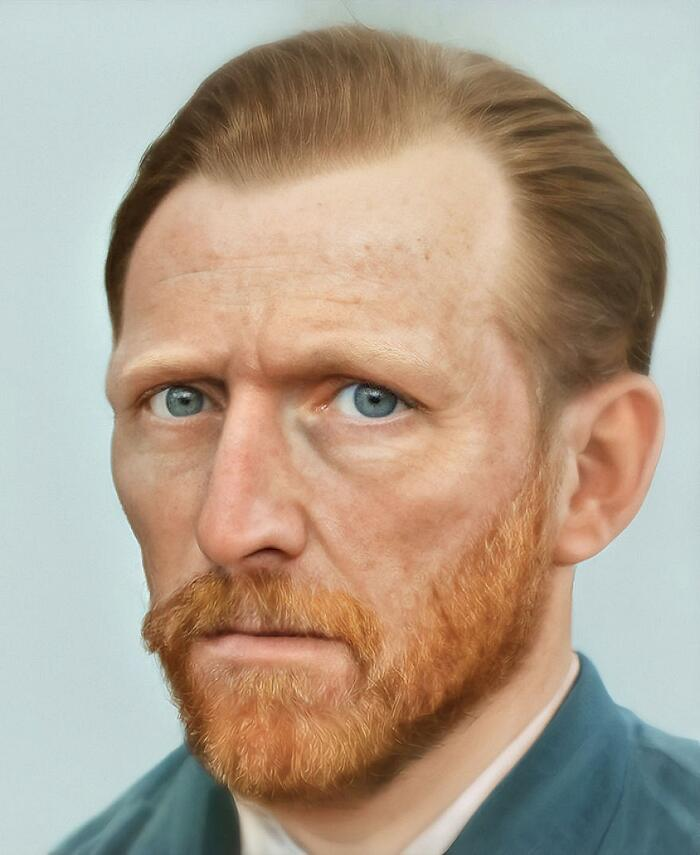
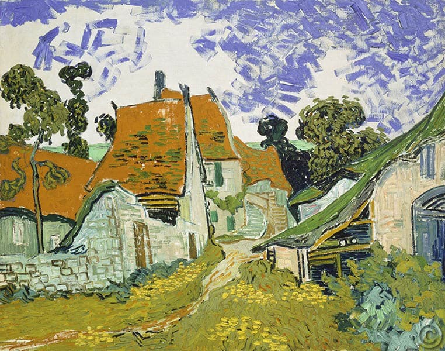
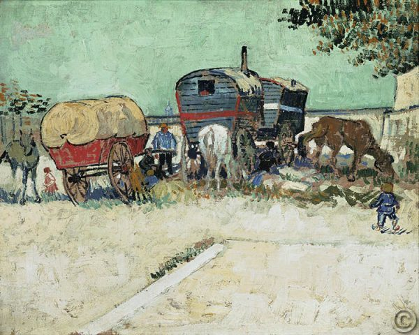
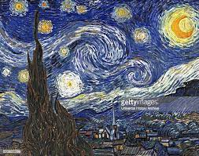

VINCENT VAN GOGH
BIOGRAFÍA

Vincent van Gogh, figura emblemática del arte postimpresionista, es sin duda uno de los artistas más famosos y fascinantes de la historia. Sus obras vibrantes, atormentadas y emocionalmente intensas, junto con una vida marcada por el sufrimiento, han dejado una huella indeleble en el mundo del arte. Pero detrás de las pinceladas audaces y los remolinos de color, se esconde un hombre profundamente complejo, en busca de amor, reconocimiento y redención.
OBRA PICTÓRICA


